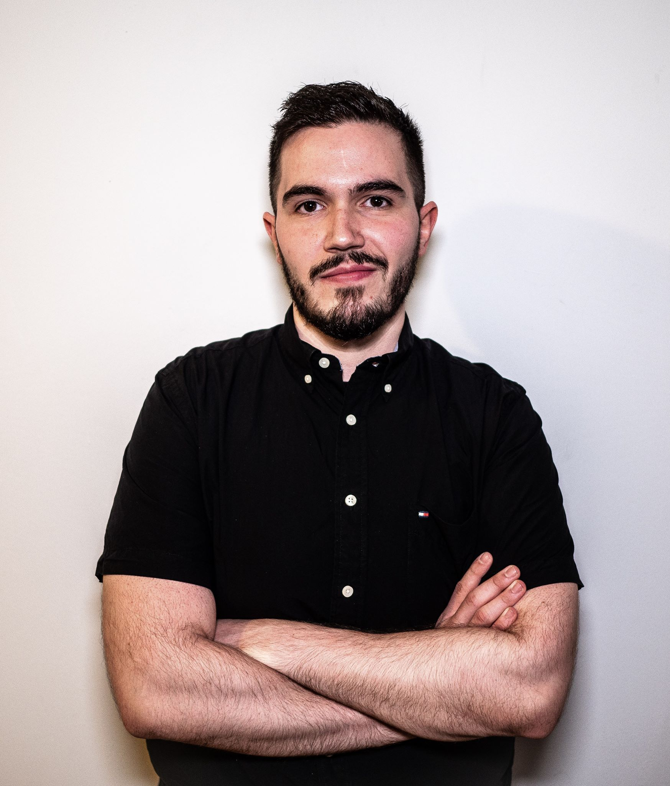

<section class="bg-primary" id="about">
    <div class="container">
        <div class="row">
            <div class="col-lg-8 col-lg-offset-2 text-center">
                <h2 class="section-heading">Software developer on a lifelong journey of learning</h2>
                <hr class="light">
                <p class="text-faded">Full Stack Software Developer with an unwavering commitment to personal growth and development in the technology industry. Recently graduated Flatiron's 15 week intensive full stack software development boot camp in New York City. Previously worked as a supervisor for a major retail/service company, overseeing associates and building strong team values.

                    With strengths in Ruby, Ruby on Rails, SQL, JavaScript, React, and Redux, I bring strong skills in collaborative problem solving, intuitive design theory, and swift knowledge acquisition that help technology based companies drive success, growth, and passion in the industry.</p>
                    
                    <br />
                    <a href="https://www.linkedin.com/in/justin-hutsell/" target="_blank" class="btn btn-default btn-xl"> <i class="fa fa-linkedin fa-3x wow bounceIn" data-wow-delay=".1s"></i><br/>LinkedIn</a>
                    <a href="https://github.com/JHutsell" target="_blank" class="btn btn-default btn-xl"><i class="fa fa-github fa-3x wow bounceIn" data-wow-delay=".1s"></i><br/>Github</a>
                    <a href="https://medium.com/@hutselljustin" target="_blank" class="btn btn-default btn-xl"><i class="fa fa-medium fa-3x wow bounceIn" data-wow-delay=".1s"></i><br/>Medium</a>
                    <a href="https://angel.co/justin-hutsell" target="_blank" class="btn btn-default btn-xl"><i class="fa fa-angellist fa-3x wow bounceIn" data-wow-delay=".1s"></i><br/>AngelList</a>
            </div>
        </div>
    </div>
</section>
